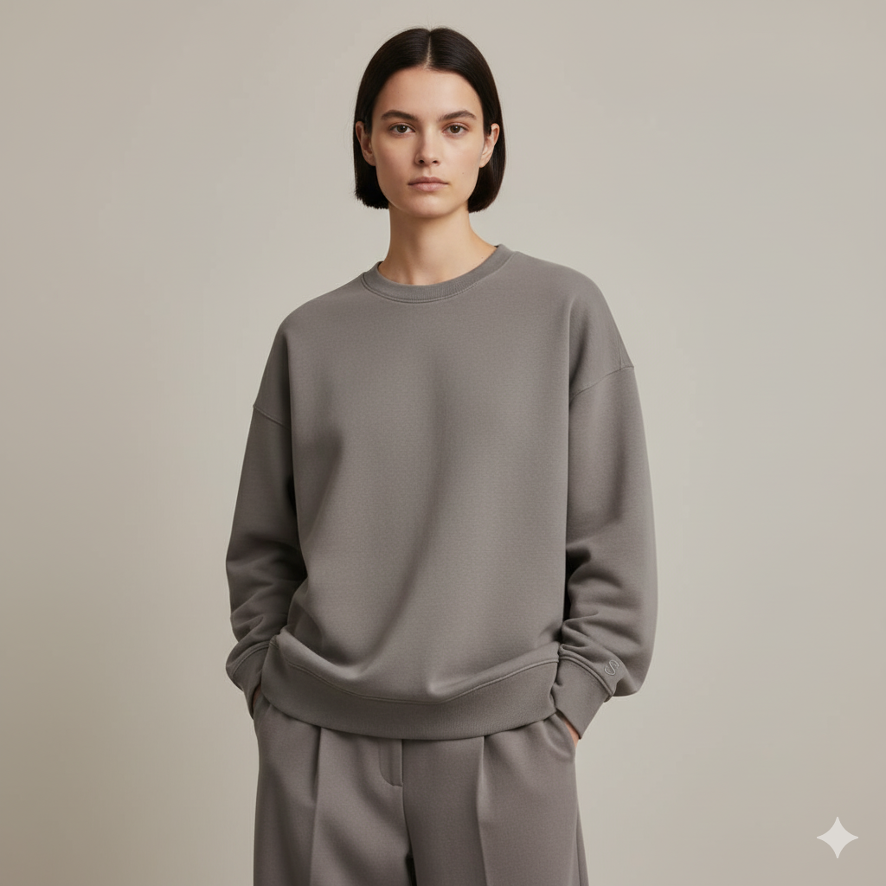

$900 MXN
Corte amplio y cómodo con o sin gorro. Algodón peinado con interior afelpado. Bordado "S" tono sobre tono en el pecho.
Colores: Negro, Gris medio, Rojo oscuro (vino)
Tallas: S, M, L, XL
Peso de tela: 320 g/m²
1.2 m² • 320 g/m²
Telas Texterra
80 g
Proveedor local QRO
1.5 m
Proveedor local QRO
Letra "S" tono sobre tono
Bordados MX
Talla y composición
Proveedor local QRO
Desglose completo de costos de producción
| Algodón peinado afelpado (320 g/m²) | $336 |
| Hilo poliéster | $16 |
| Cordón (si con gorro) | $9 |
| Etiqueta bordada "SOMA" | $8 |
| Etiqueta cuidado/talla | $2 |
| Subtotal Materiales | $371 |
| Mano de obra (corte) | $40 |
| Mano de obra (confección) | $200 |
| Mano de obra (QC + empaque) | $24 |
| Subtotal Mano de Obra | $264 |
| Costo Total de Producción | $635 |
| Precio de Venta | $900 |
| Margen Bruto | $265 (41.7%) |
Taller San José
Querétaro, México
3-4 semanas
(Mayor complejidad que playera)
3 personas
Especialización en prendas con gorro
100% inspección
Revisión especial de costuras en gorro
Con los cuidados adecuados, esta prenda durará más de 5 años manteniendo su suavidad interior.
Esta es una marca conceptual creada para el curso de Cadena de Suministros
Universidad Autónoma de Querétaro - Ingeniería en Software - 2025